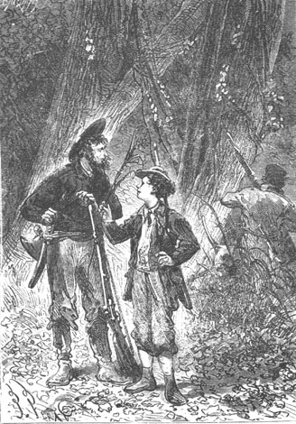
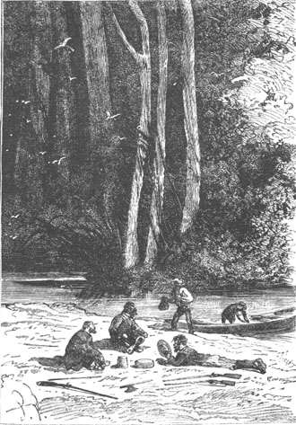
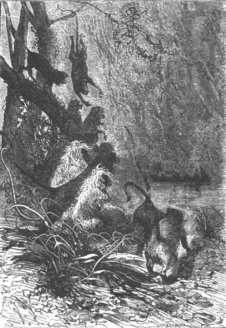

The next day, October 30th, all was ready for the proposed exploration which these latest events had rendered so urgent. In fact, things had changed to such an extent that the colonists of Lincoln Island no longer needed help for themselves but were well able to bring it to others.
It was therefore agreed that they would ascend the Mercy, as far as the river’s current would make it practical. A large part of the trip would thereby be completed without fatigue, and the explorers could transport their provisions and their arms to an advanced point on the west of the island.
It was necessary, in fact, to think not only of the things which they should carry with them but also of those which chance would perhaps permit them to bring back to Granite House. If there had been a wreck on the coast, as was generally supposed, there would be no lack of wreckage, which would be their lawful prize. In that event the cart would, without doubt, be more useful than the fragile canoe. However, the cart was heavy and large. It was necessary to drag it so that it was not easy to use. This led Pencroff to express the regret that the chest had not contained, besides his “half-pound of tobacco”, a pair of energetic New Jersey horses, which would have been very useful to the colony!
The provisions, which were already loaded by Neb, consisted of preserved meat and several gallons of beer and fermented liquor, that is to say enough to sustain them for three days—the longest lapse of time which Cyrus Smith assigned to the exploration. Moreover, they could count on reprovisioning en route, if need be, and Neb took care not to forget the small portable stove.
Of the tools, the colonists took the two woodsmen’s axes, which could be used to cut a path through the thick forest and, of the instruments, the telescope and the pocket compass.
For weapons, they chose the two flint-lock guns, which would be more useful on the island than the percussion fowling pieces, the first using only flint which would be easy to replace and the latter needing fulminating caps, the frequent use of which would soon exhaust their limited supply. However, they also took one of the carbines and several cartridges. As to the powder of which there was about fifty pounds, it was necessary to take some of it, but the engineer counted on manufacturing an explosive substance which would permit them to husband it. In addition to the firearms, they added five cutlasses, well sheathed in leather, and in this condition the colonists could venture forth into this vast forest with some chance of attending to their affairs.
Needless to say, Pencroff, Herbert and Neb, thus armed, were at the highest pitch of happiness even though Cyrus Smith had made them promise not to fire a shot needlessly.
At six o’clock in the morning the canoe was pushed into the water. All embarked, including Top, and they steered towards the mouth of the Mercy.
The tide had begun to rise only in the last half-hour. There would therefore be several more hours of current which it would be expedient to profit from, because later the ebb would make it more difficult to ascend the river. The tide was already strong for there would be a full moon in three days. It was sufficient to keep the canoe in the mainstream where it moved swiftly between the two high banks, without the need to increase its speed with the aid of the oars.
In a few minutes the explorers arrived at the bend in the Mercy, at the same angle where Pencroff had made his first raft of wood seven months earlier.
After this rather sharp angle the river, becoming more rounded, slanted toward the southwest and its course developed under a shade of conifers with a permanent verdure.
The aspect of the banks of the Mercy was magnificent. Cyrus Smith and his companions could not but admire, without reservations, the beautiful effects so easily produced by nature with the water and the trees. As they advanced, the forest species changed. On the right bank of the river there rose magnificent specimens of ulmaceous plants, those precious French elms so sought after by builders, which have the property of bearing up well in water for a long time. Then there were numerous groups belonging to the same family, nettle trees among others, whose almond produces a very useful oil. Further on Herbert noted some lardizabalaceae whose flexible boughs, soaked in water, make an excellent cord, and two or three ebony trunks of a beautiful black color, divided into capricious veins.
From time to time, in certain places where it was easy to land, the canoe stopped. Then Gideon Spilett, Herbert and Pencroff, with gun in hand and preceded by Top, jumped to shore. Without expecting any game, they hoped to find some useful plant that they would not disdain and the young naturalist had his heart’s desire because he discovered a sort of wild spinach of the chenopodiaceae family and numerous specimens of crucifers of the cabbage family which it would certainly be possible to “civilize” by transplanting. There were cress, horse radish, turnips and finally small slightly rough branchy stems, a meter high, which produced an almost brown grain.
“Do you know what this plant is?” Herbert asked the sailor.

“Do you know what this plant is?”
“Tobacco,” cried Pencroff, who evidently had never seen his favorite plant except in the bowl of his pipe.
“No, Pencroff!” replied Herbert, “it is not tobacco, it is mustard.”
“What’s the good of mustard!” replied the sailor, “but if by chance a tobacco plant should present itself, my boy, don’t disregard it.”
“We will find it one day!” said Gideon Spilett.
“True,” cried Pencroff, “and on that day I will know that there is nothing lacking on our island.”
These various plants, which were carefully uprooted, were carried to the canoe which Cyrus Smith, always absorbed in his thoughts, had not left.
The reporter, Herbert and Pencroff went ashore several times, sometimes on the right bank of the Mercy, sometimes on the left bank. The former was less abrupt but the latter was more wooded. By consulting his pocket compass the engineer knew that the direction of the river from the first bend was essentially southwest and northeast and nearly straight for a length of about three miles. But he supposed that this direction would change further on and that the Mercy ascended to the northwest toward the buttresses of Mount Franklin which fed these waters.
During one of these excursions, Gideon Spilett succeeded in getting hold of two couples of living gallinaceae. They were birds with long slender beaks, long necks, short wings and without an apparent tail. Herbert correctly gave them the name of “tinamous” and it was resolved that they would be the first occupants of the future poultry yard.
But until then the guns had not spoken and the first detonation that resounded in this forest of the Far West was provoked by the appearance of a beautiful bird which anatomically resembled a kingfisher.
“I recognize it,” cried Pencroff, whose gun went off in spite of himself.
“What do you recognize?” asked the reporter.
“That bird that escaped us on our first excursion and whose name we have given to this part of the forest.”
“A jacamar!” cried Herbert.
In fact it was a jacamar, a beautiful bird whose rather stiff plumage has a metallic luster. A few lead pellets brought it to the ground and Top carried it to the canoe, as well as about a dozen “touraco lories”, a sort of parrot the size of a pigeon, all daubed in green with part of its wing of a crimson color and a narrow festooned crest with a white border. The honor of this shot belonged to the lad and he showed pride in it. Lorries make better game than jacamars, whose flesh is a little tough, but it was difficult to persuade Pencroff that he not killed the king of edible birds.
It was ten o’clock in the morning when the canoe reached a second bend in the Mercy, about five miles from its mouth. They halted here to eat and this halt, sheltered by large beautiful trees, was prolonged for half an hour.

They halted here to eat.
The river still measured sixty to seventy feet in width and five to ten feet in depth. The engineer observed that numerous tributaries enlarged its flow but they were only simple unnavigable streams. As to the forest, which could be a part of the forests of the Far West as well as Jacamar Woods, their extent was lost to view. In no part, neither under the tall tree clusters nor on the banks of the Mercy, was the presence of man revealed. The explorers could not find any suspicious traces and it was evident that the woodsman’s axe had never slashed these trees, that never had the pioneer’s knife cut these creepers stretching from one trunk to the other amidst the thick brushwood and tall grass. If several castaways had landed on the island they still had not left the shore and it was not under this thick cover that they should look for survivors of the presumed shipwreck.
The engineer therefore manifested a certain haste in reaching the western coast of Lincoln Island, at least five miles away according to his estimate. The navigation was resumed and although from its actual direction the Mercy seemed to flow not toward the shore but rather toward Mount Franklin, it was decided that they would make use of the canoe as long as they would find sufficient water under its keel to keep it afloat. This would save fatigue as well as gain time because it would have been necessary to blaze a trail with an axe across the thick woods.
But soon the current failed completely either because it was low tide—which was the case at this hour—or because it was no longer felt at this distance from the mouth of the Mercy. It was then necessary to use the oars, Neb and Herbert being seated on their bench, Pencroff at the scull, and the ascent of the river was continued.
It then seemed that the forest tended to be thinner toward the shore of the Far West. The trees here were less crowded and were often isolated. But, because they had more space, they profited from the pure and free air which circulated around them and they were magnificent.
What splendid specimens of the flora of this latitude! Their presence would certainly suffice for a botonist to name without hesitation the parallel that crossed Lincoln Island.
“Eucalyptus,” cried Herbert.
They were, in fact, those superb trees, the last giants of the extra-tropical zone, the congeners of the eucalyptus of Australia and of New Zealand, both situated on the same latitude as Lincoln Island. Several rose to a height of two hundred feet. Their trunk measured twenty feet around the base and their bark, furrowed with a network of perfumed resin, measured up to five inches in thickness. Nothing was more marvellous nor more singular than these enormous specimens of the myrtaceae family, whose foliage presented their profile to the light, allowing the sun’s rays to strike the ground.
At the foot of these eucalyptus, a fresh grass covered the ground and from the tufts, small birds flew away shining in luminous rays like flying precious stones.
“Those are trees!” cried Neb, “but are they good for anything?”
“Pooh!” replied Pencroff. “Vegetable giants are like human giants, only good for showing at fairs.”
“I believe you are in error, Pencroff,” replied Gideon Spilett, “and that the wood from eucalyptus is used very advantageously in cabinet making.”
“And I will add,” said the lad, “that these eucalyptus belong to a family that comprise many useful members: the guava-tree which gives guavas; the clove tree which produces cloves; the pomegranate tree which yields pomegranates; the ‘eugenia cauliflora’ whose fruit makes a passable wine; the ‘ungi’ myrtle which contains an excellent alcoholic liqueur; the caryophyllus myrtle whose bark makes an esteemed cinnamon; the ‘eugenia pimenta’ from which comes Jamaica pimento; the common myrtle whose berries can replace pepper; the ‘eucalyptus robusta’ which produces a sort of excellent manna; the ‘eucalyptus gunei’ whose sap transforms into beer by fermentation; and finally all those trees known under the name of ‘trees of life’ or ‘ironbarks’ which belong to this myrtaceae family that comprises forty six genuses and thirteen hundred species.”
They let the lad go on, who delivered this mini-lesson in botany with much heartiness. Cyrus Smith smiled and listened to him and Pencroff showed a pride impossible to express.
“Good, Herbert,” replied Pencroff, “but I will venture to say that all these useful specimens that you mentioned are not giants like these!”
“Indeed, Pencroff.”
“That supports what I said,” replied the sailor, “namely that these giants are good for nothing!”
“You are mistaken, Pencroff,” the engineer then said, “and these very giant eucalyptus which shelter us are good for something.”
“And what is that?”
“To cleanse the lands that they inhabit. Do you know what they are called in Australia and New Zealand?”
“No, Mister Cyrus.”
“They are called ‘fever trees’.”
“Because they bring it on?”
“No, because they prevent it!”
“Good. I will note this,” said the reporter.
“Note then, my dear Spilett, that it appears that the presence of eucalyptus suffices to neutralize marshy miasmas. This natural preventive has been tried in certain countries of southern Europe and North Africa whose soil is absolutely unhealthy and the health of their inhabitants has been improved little by little. It is likewise for intermittent fevers in those regions covered by forests of these myrtaceae. This fact is now beyond doubt and it is a happy circumstance for us colonists of Lincoln Island.”
“Ah! What an island! What a blessed island!” cried Pencroff. “I tell you that it lacks nothing... except for...”
“That will come, Pencroff, it will be found,” replied the engineer, “but let us get back to our navigation and push as far as the river can carry our canoe!”
The exploration was thus continued for at least two miles amidst a country covered with eucalyptus which dominated all of the woods in this portion of the island. The space that it covered extended beyond the limits of sight on each side of the Mercy, whose rather winding bed was cut there between high verdant banks. This bed was often obstructed by tall grass and even sharp rocks, which made the navigation rather laborious. The action of the oars was cramped and Pencroff had to push with a pole. They also felt the bottom coming up little by little and that the moment was not far off when, for lack of water, they would be obliged to stop. Already the sun was low on the horizon and the long shadows of the trees fell on the ground. Cyrus Smith, seeing that they could not reach the west shore of the island on this day, resolved to camp at the very place where they would be forced to stop for lack of water. He estimated that there still were five or six miles to the coast and this distance was too much to try to cross during the night, in the midst of these unknown woods.
The boat was therefore pushed, without slackening, through the forest which was becoming thicker and which also seemed inhabited. If the sailor’s eyes did not deceive him, he thought he saw bands of monkeys running under the brushwood. Several times two or three of these animals even stopped at some distance from the canoe and looked at the colonists without manifesting any terror as if, seeing men for the first time, they had not yet learned to fear them. It would have been easy to kill these quadrumanes with gunshots but Cyrus Smith was opposed to this useless massacre which Pencroff found a little tempting. Besides it was prudent because these vigorous monkeys, endowed with an extreme agility, could be formidable and it would be better not to provoke them with an inopportune aggression.

The monkeys looked at the colonists.
It is true that the sailor considered the monkey from the purely alimentary point of view and, in fact, these animals are solely herbivores, making an excellent game; but since provisions abounded, it was inappropriate to use munitions wastefully.
About four o’clock the navigation of the Mercy became difficult because its course was obstructed by aquatic plants and rocks. The banks rose little by little and already the bed of the river was hollowed out between the first buttresses of Mount Franklin. Its source could not be far away since it was fed by all the waters from the southern slopes of the mountain.
“In a quarter of an hour,” said the sailor, “we will be forced to stop, Mister Cyrus.”
“Well, then we will stop, Pencroff, and we will organize a camp for the night.”
“At what distance can we be from Granite House?” asked Herbert.
“Very nearly seven miles,” replied the engineer, “taking into account however the detours of the river which have carried us to the northwest.”
“Shall we continue to go forward?” asked the reporter.
“Yes, for as long as we can,” replied Cyrus Smith. “Tomorrow, at the break of day, we will abandon the canoe. In two hours, I hope, we will traverse the distance which separates us from the coast and we will have almost the entire day to explore the shore.”
“Forward,” replied Pencroff.
But soon the canoe scraped the stony bottom of the river whose width at that point did not exceed twenty feet. A thick verdure grew over the river’s bed and enveloped it in semi-obscurity. They also heard the rather distinct noise of a waterfall which indicated the presence of a natural barrier several hundred feet upstream.
And in fact, at a last detour of the river, a cascade appeared through the trees. The canoe hit against the bottom and a few moments later it was moored to a trunk near the right bank.
It was about five o’clock. The last rays of the sun passed under the thick branches and obliquely struck the small falls, whose wet spray glistened with the colors of the prism. Further on the Mercy disappeared under the brushwood where it was fed by some hidden source. The various brooks which ran into it lower down made it a true river but here it was only a clear stream without any depth.
They camped in this very place, which was charming. The colonists landed and a fire was lit under a group of large nettle trees among whose branches Cyrus Smith and his companions could find refuge for the night, if need be.
Supper was soon devoured because they were famished and there was no other question but that of going to sleep. Inasmuch as several roars of a suspicious nature were heard before the end of the day, the fire was fed for the night so as to protect the slumberers with its crackling flames. Neb and Pencroff even took turns in watching it and did not spare the fuel. Perhaps they were not wrong since they thought they saw the shadows of animals wandering around the encampment, either under the brushwood or among the branches; but the night passed without accident and the next day, the 31st of October, at five o’clock in the morning, all were on foot ready to leave.